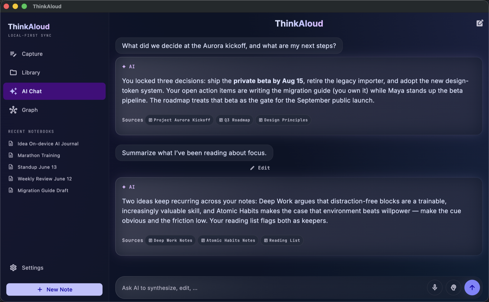
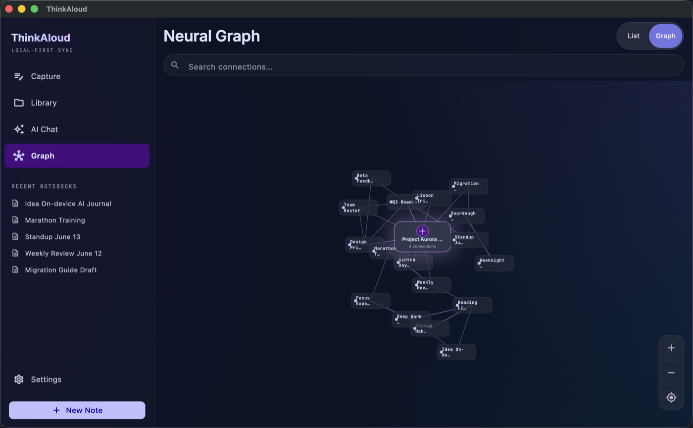

Features
Speak it, snap it, or type it
The capture screen is the home screen — pick a style chip and go. Templates shape the result: a Journal entry comes out as flowing reflection, a Meeting as decisions and action items, an Idea as a crisp summary with next steps. You can edit the built-in templates or write your own.
- Voice — talk naturally; filler words disappear, names and numbers don't
- Photo — whiteboards, documents, and slides become written notes
- Text — paste or type, same structuring pipeline
- Share sheet (Android) — send content from other apps
- Review first — stop, play the take back, then create the note or discard it; nothing is processed until you decide

Lecture-length recordings
Record a class, a meeting, or a long walk-and-talk. A dedicated speech model (NVIDIA Parakeet) transcribes live as you record — labeling who said what — while the AI builds a running understanding of the whole recording, then writes one note in your selected style that covers all of it — with a timestamped transcript below and the original audio embedded, playable inside the note.
The screen stays awake while you record. On Android, processing then continues in the background with a progress notification; on iOS the screen stays awake while it finishes. The raw recording is saved into the vault before processing starts, so even a crash can't lose your audio.

Question your own notes
AI Chat answers from your vault, not from the internet. Ask by typing or by voice; ask follow-ups; switch on Think mode when a question needs a deeper search. Answers are grounded in retrieved excerpts of your notes, and each one shows its Sources — tap a chip to open the note behind the answer.
There's a per-note chat too: open any note and ask about it, or tell it "change Friday to Monday" and watch the edit apply surgically.

A graph that draws itself
Every capture gets a ## Related section linking the existing
notes it overlaps — exact-title [[wikilinks]] the app verifies
against your vault, never links the model made up. The graph view shows the
result: clusters for your projects, your journal, your recipes, connected
where your thinking actually connects.

Browse, search, filter
Full-text search across every note, instant tag filtering
(#work, #recipe), and the five most recent notes on
the home screen. Library and home share the same rich cards — voice notes
show their waveform, photo notes a thumbnail — and the timeline follows each
note's own capture date, so syncing across devices never reshuffles it.
Notes open into a reader with tappable checklists, inline
images and audio, and rendered wikilinks — or flip to the editor for raw
Markdown with a formatting toolbar.
- Vault health — find orphaned attachments, broken links, and untagged notes, each with a one-tap fix
- Share any note as Markdown or a rendered PDF — emoji included

Your model, your rules
Settings exposes the machinery instead of hiding it. A live model picker lists the on-device models your device can actually run — including NPU-optimized builds matched to your chip — with resumable downloads. Tune the context window, sampling temperature, retrieval depth, emoji styling, note language, and whether captures get the second polish pass. Prefer Gemma for transcription — say, for non-English audio? One toggle switches (much slower).
Notes live in plain Markdown wherever you point the app: its own folder, any folder you pick, or an existing Obsidian vault. Optional sync goes to your own Google Drive or iCloud — the developer runs no servers.

On your Mac, too
ThinkAloud is also a native macOS app. Open the same folder of Markdown files and you get a three-pane desktop layout — recent notebooks in the sidebar, your notes in the centre, and AI synthesis alongside — running the same 100% on-device model. One vault, from your phone or your desk.


Curious how it all fits together? Read the explainer →